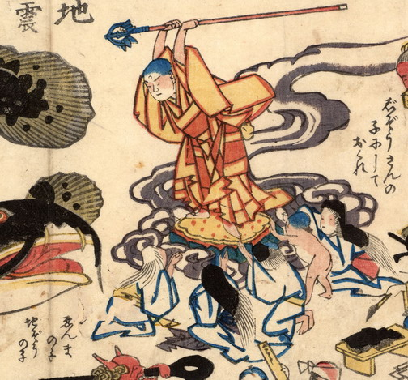

鯰に向かって錫杖を振り上げている地蔵の台座に、亡者たちがすがりついている。大人の亡者は白い衣を着て、座り、両手を地蔵に向かってあわせている。髪は垂らしている。子供の亡者は裸で、台座にすがりついている。
出典：親書誌：U426_nichibunken_0170：地震冥途ノ図；ジシンメイドノズ／日付：2010／資源識別子：U426_nichibunken_0170_0002_0000
Copyright (c)2010- International Research Center for Japanese Studies, Kyoto, Japan. All rights reserved.